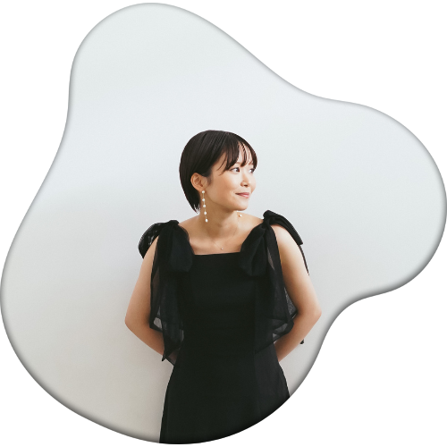

AI IZAKI
It Is My Protfolio Site

井崎 愛
1998年、長崎生まれ。東京在住の26歳。
2021年より、プロジェクトマネジメントを専門とする企業で、
PMOとして約4年間計8社を支援。
様々なクライアントのプロジェクトを支援していくにあたり、
自分でも何か生み出せるスキルが欲しいと思い、
WEBデザインの学習を開始。
学ぶだけでなく、クライアントへの価値提供がしたいと感じ、
本格的にデザインの道へ。
今後はPMOとしての経験を活かし、クライアントへ寄り添い伴走しながら、
デザインだけでなく、課題解決等のお力にもなれればと思いますので、
お気軽にご相談ください。